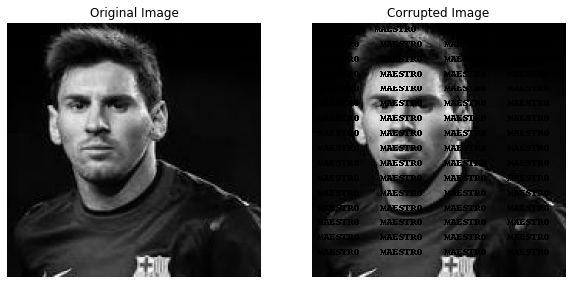
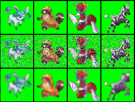

About
Bachelor of advance computing at Australian National University. Data science and machine learning enthusiast.
- Birthday: 15 Dec 1998
- City:Canberra, Australia
- University: Australian National University
- Email: sankhyasingh.singh5@gmail.com
- Age: 22
- Degree: Bachelor of advance computing (Honours)
I am a recent graduate of Bachelor in Advance computing (Honours) from Research school of Computer science and Engineering Australian National University. I'm passionate about machine learning and data science and have completed all the advanced course in machine learning before my degree completion. I exhibit a resolute mentality, and eager to learn and adapt to different environments. I am currently seeking data science or machine learning entry level roles in the whole of Australia.
Skills
Resume
Education
Bachelor of Advanced computing (Honours)
2018-2020
Australian National University, Canberra, ACT
Specialisation in Intelligent systems and machine learning
Course completed
1)Advance topics in Machine learning (Convex optimisation problems, Solutions using Newton's Method and Interior point method and Intro to Deep Declarative Networks)
2)Statistical Machine learning (Regression, classification, probabilistic graphical models, SVM's and kernel methods)
3)Introduction to Machine Learning
4)Bio Inspired Human computing : Neural Networks(CNN, LSTM, Variational autoencoders, GAN's, Reinforcement learning, Evolutionary Algorithms, Swarm movement)
5)Artificial Intelligence (Constraint programming,search algorithms(A*),Planning and KKR(Knowledge representation and reasoning))
Research Project
Allowing exceptions in Knowledge base through Defeasible reasoning
Defeasibe reasoning allows exceptions in the process of decision making . The project involved testing various section of the laws and check their consistency by allowing redundant exceptions
Bachelor of computer science and engineering
2016-2018
Manipal Academy of Higher education
This was my exchange university back in my native country
GPA 3.6/4.0
Internship
JP Morgan Chase
Virtual Software Engineer
Dec 2019 - Feb 2020
- Establishing Financial Data feeds
- Frontend Web development
- Data Visualization with Perspective
Volunteering
Robogals Canberra
2018- 2020
National Youth Project(India)
2012-2013
Portfolio
Combination of projects done on individual as well as university based teaching guidelines.
|  |
Total Variation denoising using convex optimisation
|
Facial recognition using transfer learning and quantization
|
|
|  |
Variational Auto encoders and decoders on Pokemon Dataset
|
Videos
The following videos were recorded for the course of Intro to statistical machine earning (Australian national university) .
A detailed lecture on Support Vector machines (SVM)
|
|
Overview on Kernel methods
|